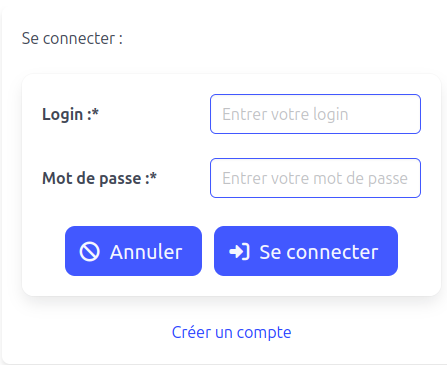
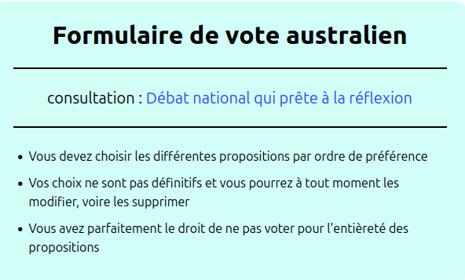
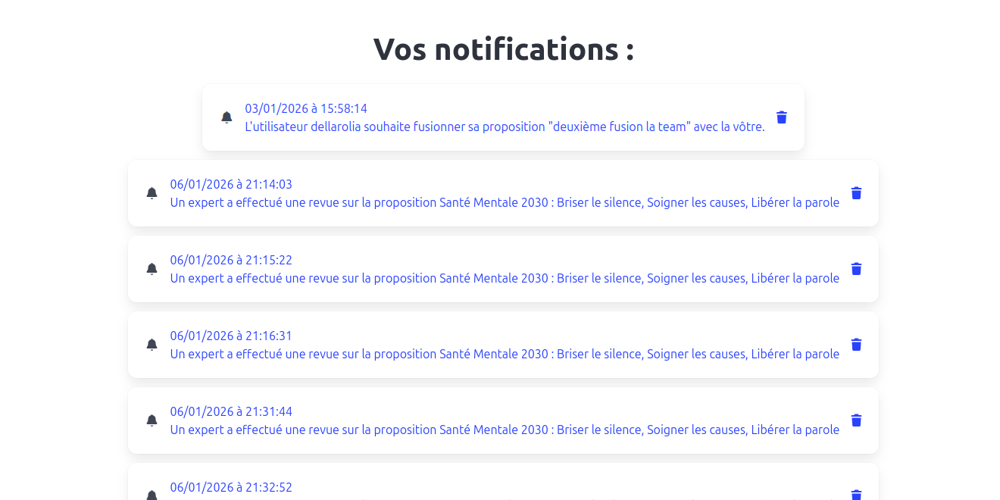
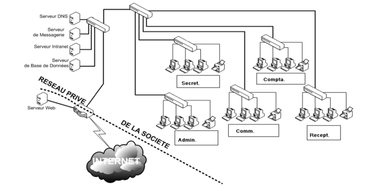
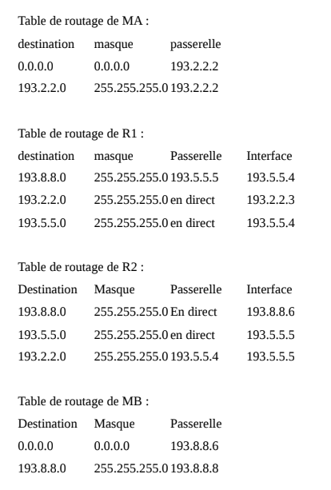
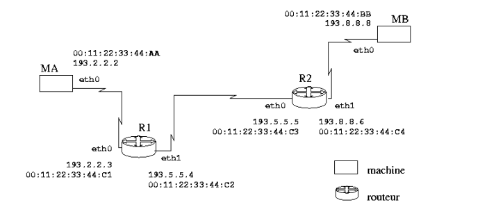
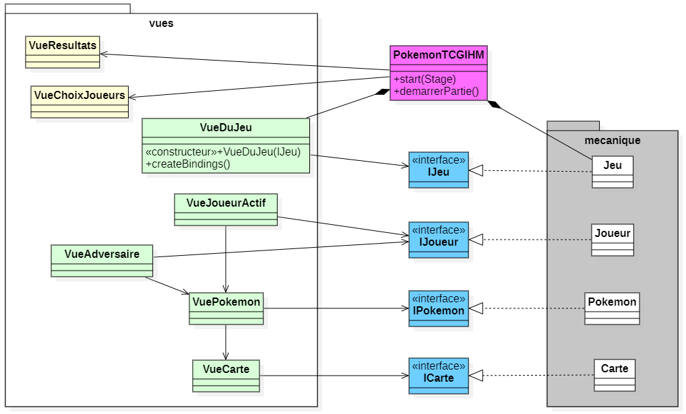
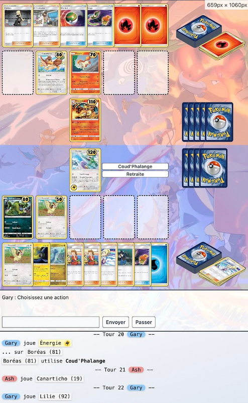
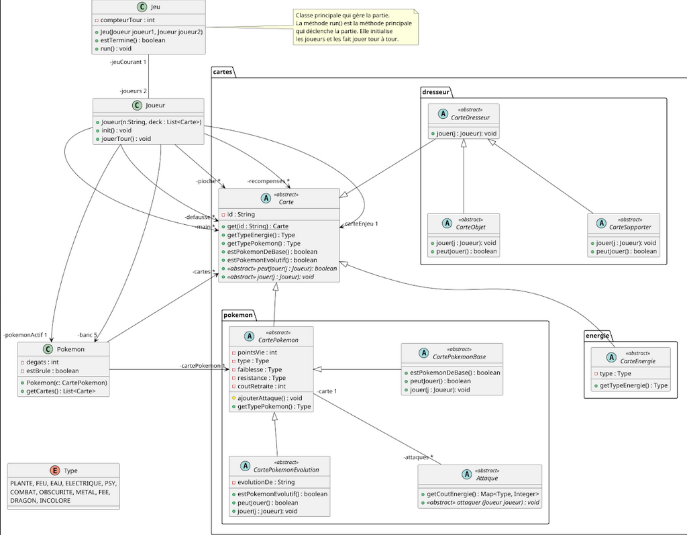

Actuellement en deuxième année de BUT Informatique, j'ai choisi de m'orienter vers le parcours
RACDV (Réalisation d'Applications : Conception, Développement, Validation). Ce
choix marque une transition dans mon cursus : alors que ma troisième année sera quasi exclusivement
dédiée au développement et à l'architecture logicielle, la fin de ce semestre valide mon niveau de
maîtrise sur les piliers fondamentaux de l'informatique générale.
Ce bilan d'apprentissage présente donc la validation finale de mes Compétences 3, 4 et
5 (Administration système, Gestion de données et Conduite de projet).
Même si ces matières ne seront plus au cœur de ma spécialisation l'année prochaine, elles constituent
le socle de ma rigueur technique. À travers les projets détaillés ci-dessous, je démontre comment
j'ai mobilisé ces acquis pour construire des solutions robustes, gérer des infrastructures complexes
et mener des projets en équipe de manière autonome et professionnelle.
1. Plateforme de Démocratie Participative (Web Fullstack)
Description : Développement sur 6 mois d'une application web complexe en équipe de
4, permettant aux citoyens de soumettre des projets et de voter de manière sécurisée.
Compétences mobilisées : Ce projet est le support principal de la Compétence 5
(Conduire un projet) pour la gestion de l'équipe et de la Compétence 4 (Gérer des données) pour la
sécurisation des informations citoyennes.
Validations :
AC 5.2CE 1
« Formaliser les besoins du client et de l’utilisateur en
communiquant efficacement avec les différents acteurs d'un projet »
J'ai traduit les demandes fonctionnelles du tuteur en
spécifications techniques ("User Stories") claires pour l'équipe de développement.
AC 5.4CE 4
« Définir et mettre en œuvre une démarche de suivi de projet en
adoptant une démarche proactive, créative et critique »
J'ai piloté l'utilisation de Jira pour le suivi des sprints, ce
qui nous a permis de réévaluer nos priorités à chaque étape pour garantir la livraison.
AC 4.2CE 1
« Assurer la confidentialité des données (intégrité et sécurité) en
respectant les réglementations sur la protection des données personnelles »
J'ai implémenté le hachage des mots de passe et l'anonymisation
des votes en base de données pour assurer la conformité RGPD.
AC 3.1CE 3
« Concevoir et développer des applications communicantes en offrant
une qualité de service optimale »
J'ai mis en place une architecture client-serveur fluide
permettant des échanges de données rapides et fiables entre le front-end et le back-end PHP.



2. Infrastructure Réseau Coworking (SAE 2.03)
Description : Conception et déploiement en binôme d'une architecture réseau
virtualisée (VirtualBox/GNS3) incluant la configuration de serveurs LAMP sécurisés.
Compétences mobilisées : Ce projet valide la Compétence 3 (Administrer des systèmes
complexes) par la maîtrise de la virtualisation et de la sécurité des services.
Validations :
AC 3.2CE 2
« Utiliser des serveurs et des services réseaux virtualisés en
appliquant les normes en vigueur et les bonnes pratiques architecturales et de sécurité
»
J'ai configuré un environnement isolé sous Linux hébergeant des
services web et de messagerie interconnectés.
AC 3.3CE 1
« Sécuriser les services et données d’un système en sécurisant le
système d'information »
J'ai paramétré les pare-feu et les droits d'accès serveurs pour
protéger l'infrastructure contre les intrusions et les fuites de données.



3. Moteur de Jeu Pokémon (Java / JavaFX)
Description : Développement d'une application logicielle complète utilisant la POO
avancée pour simuler des combats au tour par tour.
Compétences mobilisées : Ce projet mobilise la Compétence 5 (Projet) pour
l'évaluation des ressources et la Compétence 3 (Systèmes) pour la stabilité applicative.
Validations :
AC 5.3CE 4
« Identifier les critères de faisabilité d’un projet informatique
en adoptant une démarche proactive, créative et critique »
J'ai dû adapter le périmètre fonctionnel du jeu en fonction du
temps imparti, en priorisant le moteur de combat sur les aspects purement visuels.
AC 3.1CE 4
« Concevoir et développer des applications communicantes en
assurant la continuité d'activité »
J'ai structuré le code pour que le moteur de jeu gère les erreurs
de logique interne sans interrompre l'expérience utilisateur (stabilité du système).



4. Interface Station Météo (Partenariat IEM)
Description : Création d'une interface web (PHP/JS) pour interroger une base de
données météorologiques et restituer les historiques sous forme de graphiques.
Compétences mobilisées : Ce projet est centré sur la Compétence 4 (Gérer des
données) pour l'optimisation et la visualisation des informations.
Validations :
AC 4.1CE 4
« Optimiser les modèles de données de l’entreprise en assurant la
cohérence et la qualité »
J'ai réorganisé les tables SQL pour indexer les relevés par date
et type de capteur, améliorant ainsi drastiquement la vitesse de génération des historiques.
AC 4.3CE 3
« Organiser la restitution de données à travers la programmation et
la visualisation en s'appuyant sur des bases mathématiques »
J'ai développé des scripts JavaScript calculant des moyennes
glissantes et des tendances pour afficher des graphiques météorologiques exploitables par
les chercheurs.
Description : Stage d'une semaine au sein d'une unité spécialisée dans la lutte
contre la cybercriminalité et l'analyse de preuves numériques.
Compétences mobilisées : Cette immersion valide la compréhension des processus
organisationnels (Compétence 5) et la manipulation de données variées (Compétence 4).
Validations :
AC 5.1CE 2
« Identifier les processus présents dans une organisation en vue
d’améliorer les systèmes d’information en respectant les règles juridiques et les normes en
vigueur »
J'ai analysé comment les procédures d'enquête s'insèrent dans le
cadre légal du secret de l'instruction pour garantir l'intégrité de la chaîne de preuve.
AC 4.4CE 1
« Manipuler des données hétérogènes en respectant les
réglementations sur le respect de la vie privée »
J'ai observé les techniques d'extraction de données depuis des
supports variés (images disque, logs, fichiers chiffrés) tout en respectant les protocoles
de confidentialité.